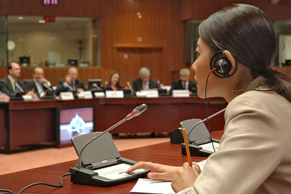

INTERPRETATION SOLUTIONS
01 / FEATURED SERVICE
Simultaneous Interpretation
Help multilingual audiences follow presentations and discussions in their preferred language with a coordinated interpretation setup.
- Multilingual conference support
- Interpreter audio distribution
- Equipment planning for your event